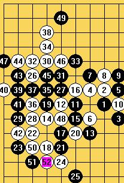

细说仇云飞对矶部泰山一局的感悟
#1 细说仇云飞对矶部泰山一局的感悟 作者：妙玉偷星 发表时间：2009-5-2 13:25:17
昨天上海名人赛有兴记了几盘棋的谱.更有兴$$记了仇云飞的的谱,下面来分析一下仇和矶部泰山对局,仇开局, 矶部君交换(斜月) 仇留了一打点,其中1-13常见变化,,,仇走了14手(矶部君,进入常考,走出15--)仇走了16手,矶部君(常考走了17,,)<个人分析,在对局当中,可以看出五子一一些基本--争二,分析对手的棋,对争二,和抢三,分别从仇的14 18 矶部君的 15 17可以看出----> 矶部走了17(个人感觉这手棋非常强,有很强有的牵制,同时有可作为过度棋,将战场--拓入黑棋的子力区,斜月局, 感觉就是子力相对集中的局,单方面的) 18-25手都是正常的过局,对局到这里,(从子力分部, 仇可能也感觉到黑比较好集中点,但是现在先手在自己手里必须走一布棋,同时打开自己的局面,因为留给白的空间不够大,而且可连接的子少,如果单防的话,肯定会很苦,想办法将战场转移,来化解黑一些棋,下棋的时候要将对手将末形成的点杀死在腹中),,,经过常走了26手.单从26这孤单一手,很容易麻痹对手, (26手的目的,声东击西) 矶部走了27手盖了眠三防止22手和26手形成呼应 (26手是否是骗呢,由于水平有限,分析不出,请原谅--) 28手是个妙手---在下面的一个区域呢--黑子白子都很孤单,但是此是先手在白手里,,所以,白有优先的开采的权力 29手也是很强的一手,积累自己的优势, 等待机会,为以后的进攻防守留下伏笔 30手,吹响了进攻的号角,五子当中经典的声东击西在这里被发挥的淋漓尽致 31手唯一防了,32手已经完善计策,34是这个计策的东风,黑此时只能选择交换,通过进攻来化解优势---黑的进攻化解策略正好中了白的计,黑到47手交换了,49唯一,但是白的真正意图却在底下,而不在上,声东击西成功
［ 茗弈小刀 于 2009-5-2 13:40:42 时奖励此帖[金币加 20 威望加1］
#2 Re:细说仇云飞对矶部泰山一局的感悟 作者：静待花开 发表时间：2009-5-2 13:36:50
写得真好！谢谢LZ!#3 Re:细说仇云飞对矶部泰山一局的感悟 作者：茗弈小刀 发表时间：2009-5-2 13:42:39
星儿还不错写得，就是看着感觉比较乱，下次建议一段一个图这么写。#4 Re:细说仇云飞对矶部泰山一局的感悟 作者：耳痛 发表时间：2009-5-2 14:30:44
有谁能告诉下 谁赢了么?
#5 Re:细说仇云飞对矶部泰山一局的感悟 作者：裁决殿雪月 发表时间：2009-5-2 15:10:46
请问，这是一打？#6 Re:细说仇云飞对矶部泰山一局的感悟 作者：天逸 发表时间：2009-5-3 4:13:57
额，好像是尴尬了点……  估计是手误吧
估计是手误吧